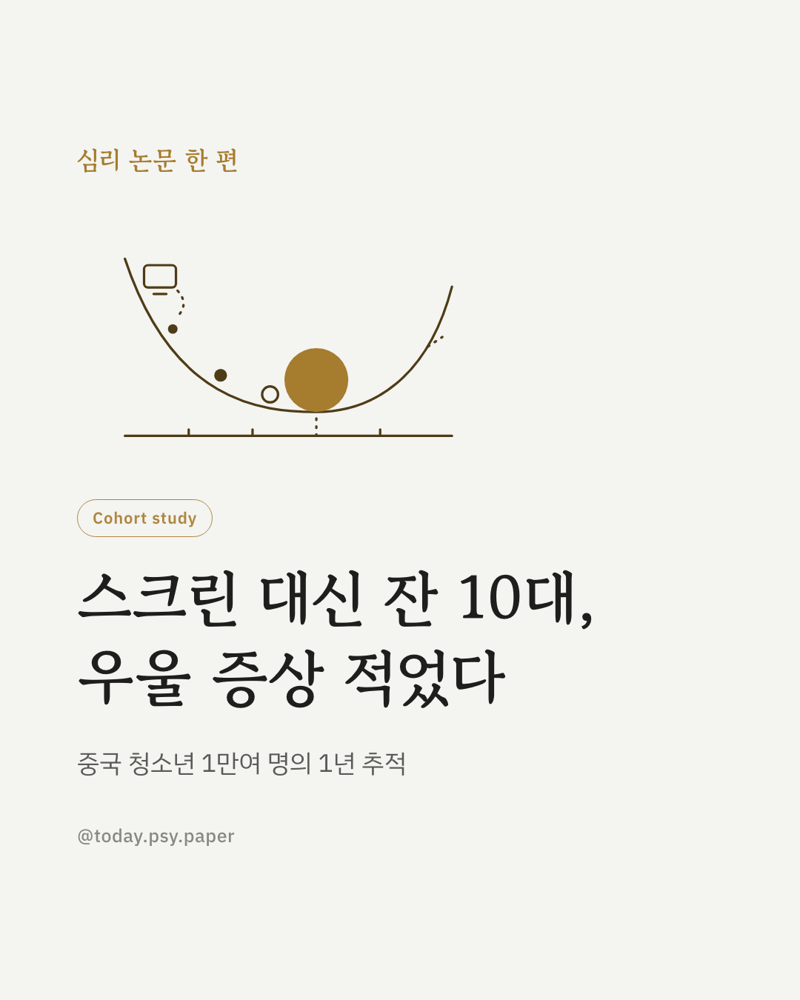
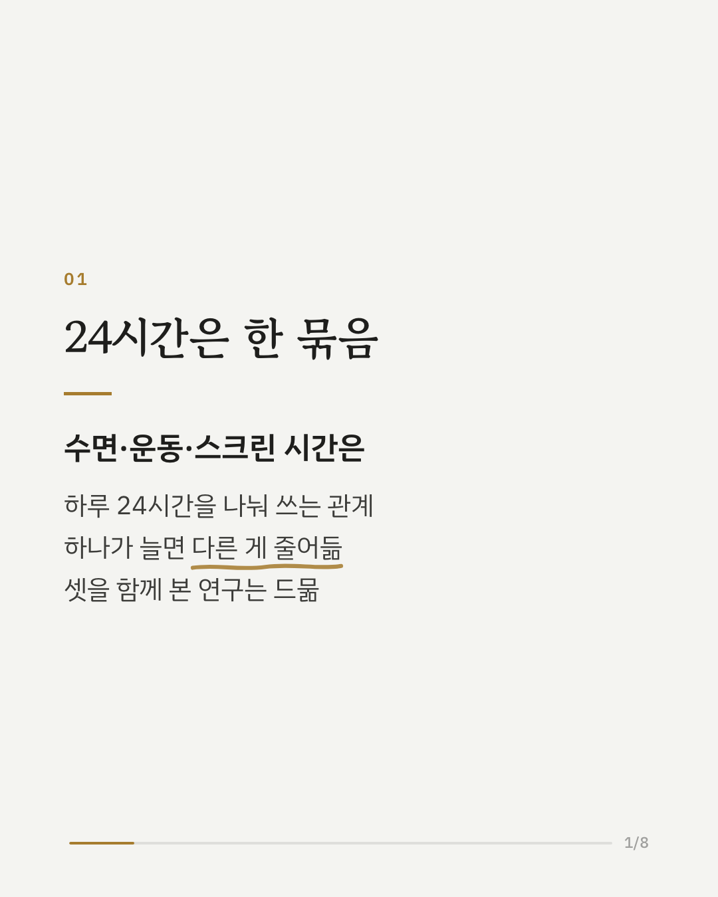
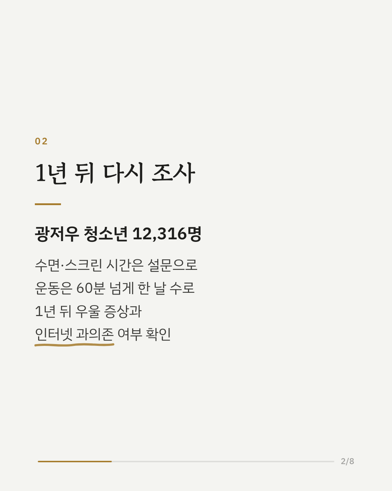
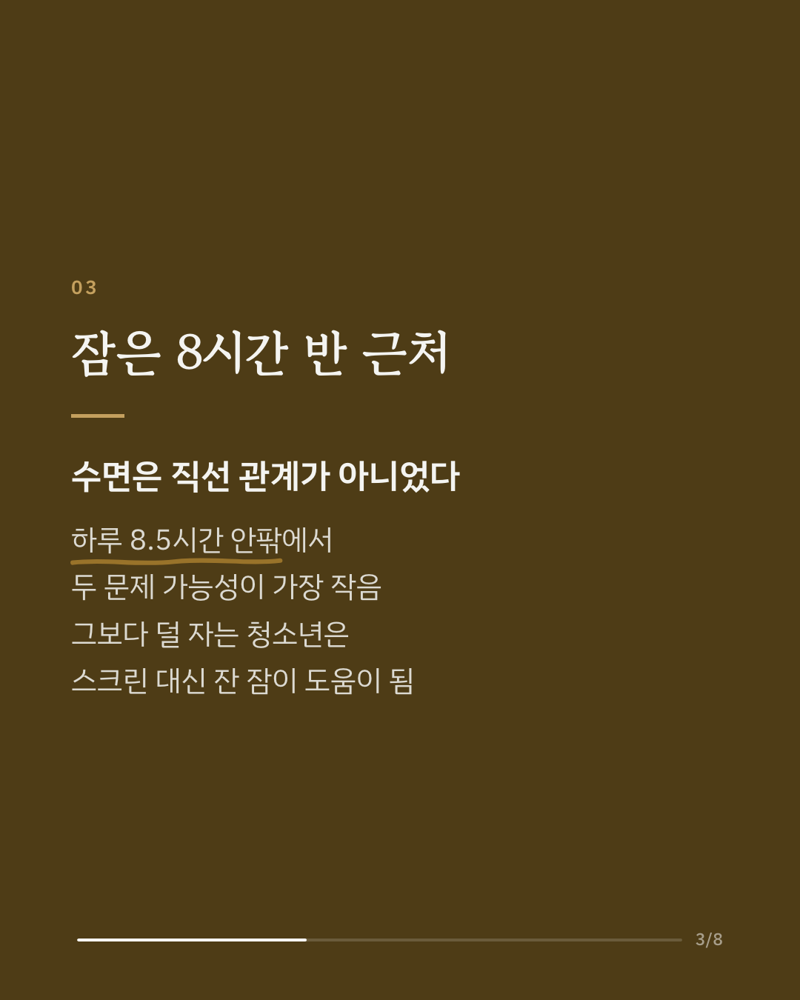
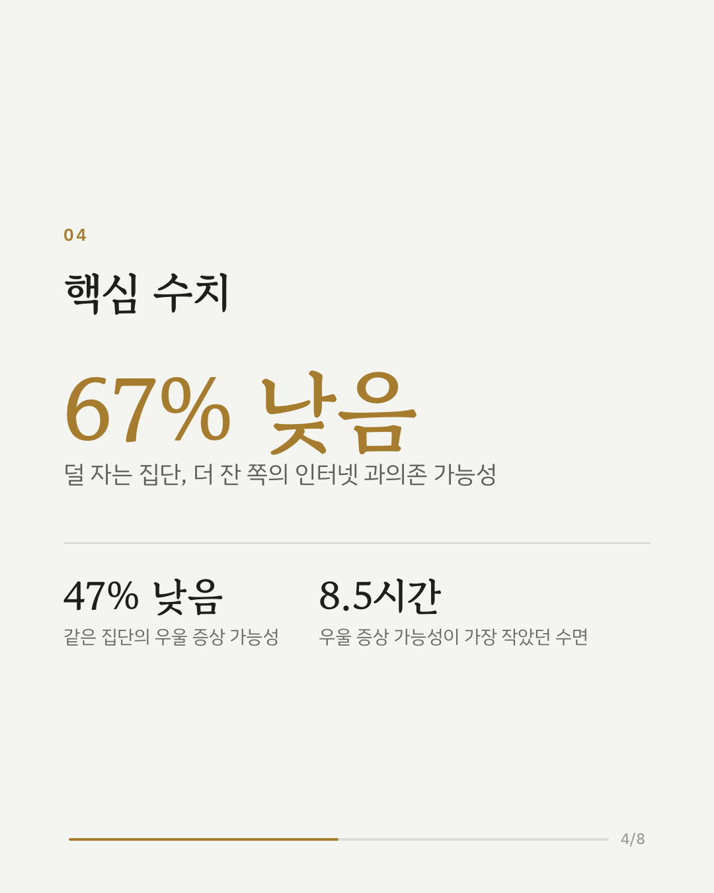
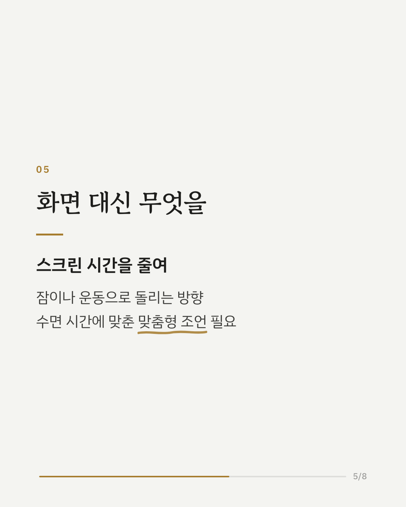
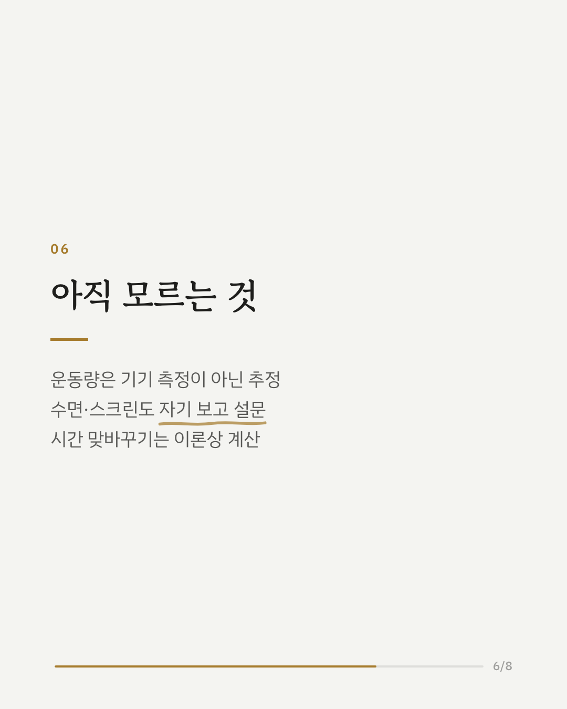
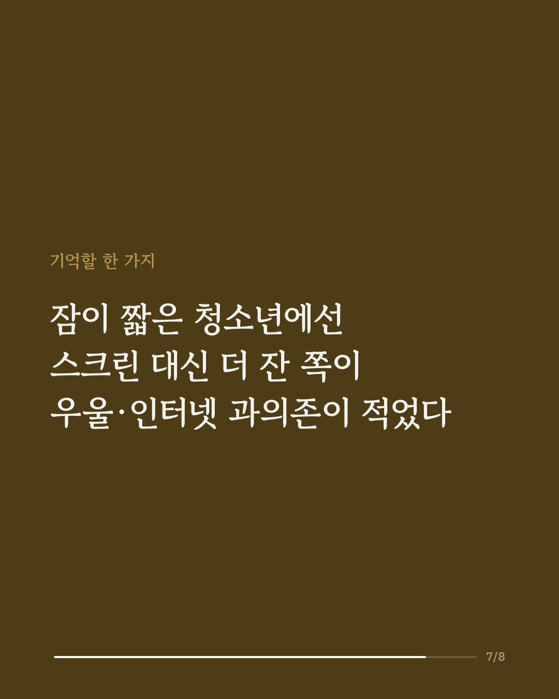
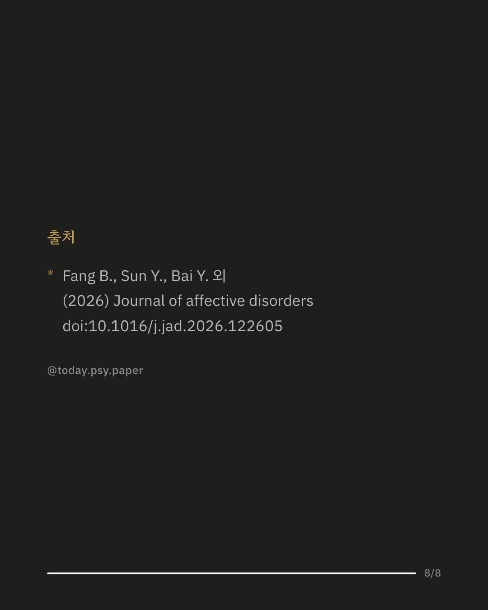

청소년의 잠, 운동, 스마트폰 같은 스크린 시간은 하루 24시간 안에서 서로 자리를 맞바꿉니다. 이 연구는 세 행동을 한 묶음으로 보고, 1년 뒤의 우울 증상과 인터넷 과의존(문제적 인터넷 사용)과의 관계를 살폈습니다. 중국 광저우 청소년 1만 2천여 명이 참여한 코호트 연구입니다. 수면은 직선 관계가 아니었습니다. 하루 약 8.5시간 안팎에서 우울 증상과 인터넷 과의존 가능성이 가장 작았습니다. 이보다 덜 자는 청소년 사이에서는 상대적으로 잠이 긴 쪽이 우울 증상 가능성은 약 절반, 인터넷 과의존 가능성은 약 3분의 1 수준이었고, 스크린 시간을 잠으로 바꾼 경우에 특히 그랬습니다. 반대로 스크린 시간이 길수록 두 문제의 가능성은 커졌습니다. 연구진은 스크린 시간을 줄이되, 수면 시간에 따라 그 시간을 잠이나 운동으로 돌리는 맞춤형 접근을 제안합니다. 다만 운동량은 '하루 60분 이상 운동한 날 수'로 추정한 값이라 실제 활동 시간과는 차이가 있을 수 있습니다. 출처: Journal of Affective Disorders (2026), 'Associations of 24-hour movement behavior composition with depressive symptoms and problematic internet use in Chinese adolescents: A cohort study' DOI: 10.1016/j.jad.2026.122605 #청소년우울 #수면시간 #인터넷과의존 #청소년심리 #임상심리 #정신건강정보 #심리학연구 #논문리뷰
python3 publish.py 42849854